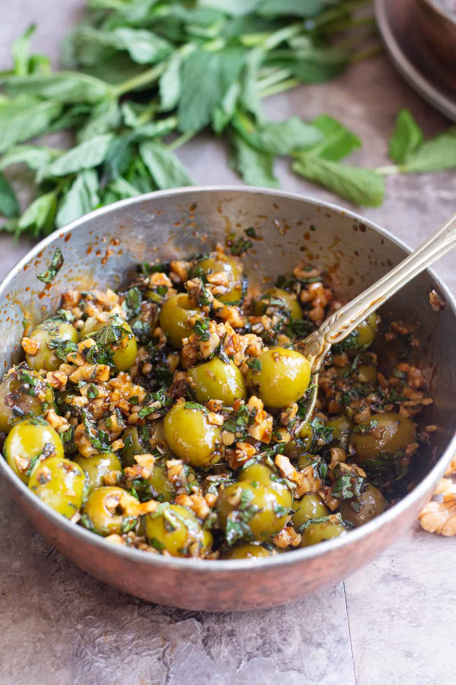

Hailing from Iranian Gilan province, this simple dish consists of a flavorful combination of pitted olives and pomegranate molasses. The additional ingredients include ground walnuts, garlic, and various fresh herbs such as cilantro or mint, as well as pomegranate seeds, and generous amounts of olive oil. Zeytoon parvardeh is usually served well chilled and is traditionally enjoyed as an appetizer or a snack.
Meal prep time : 15 minutes
Servings : 4